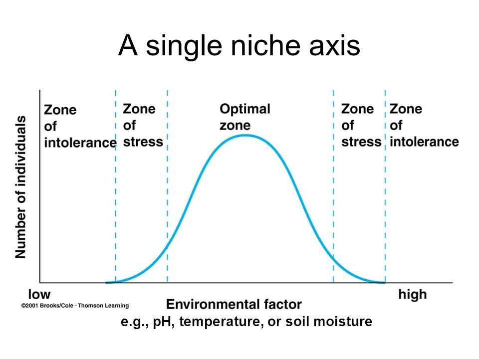
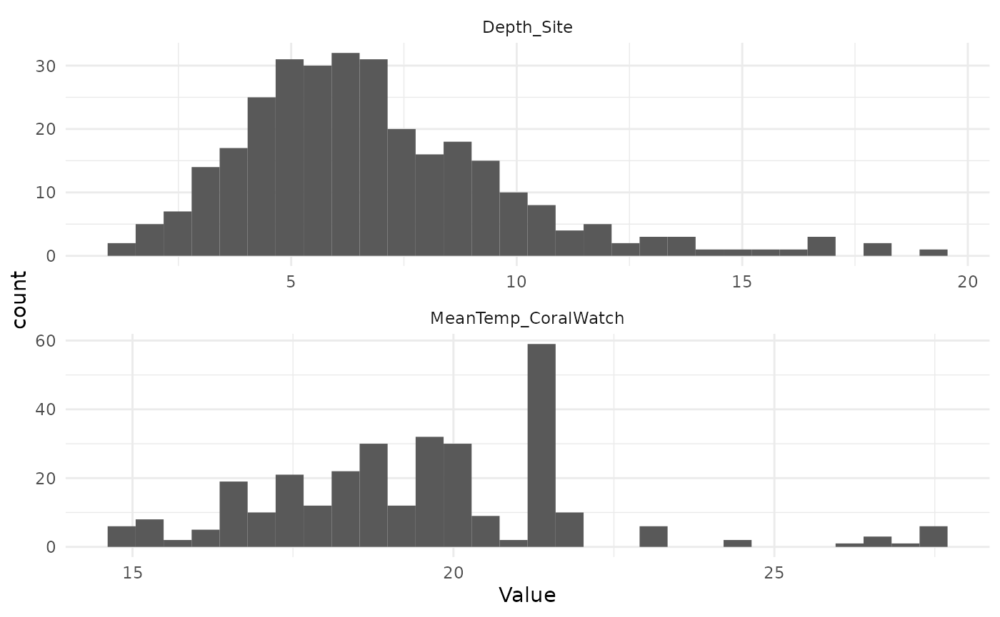
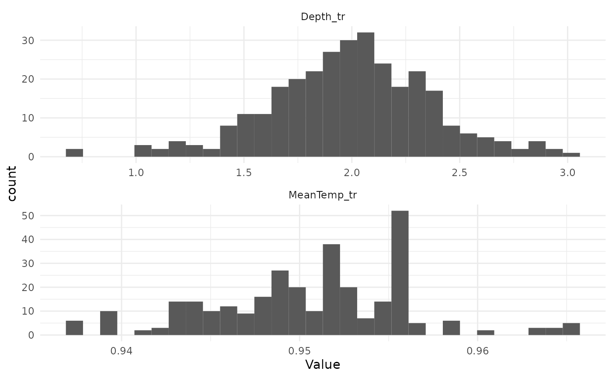
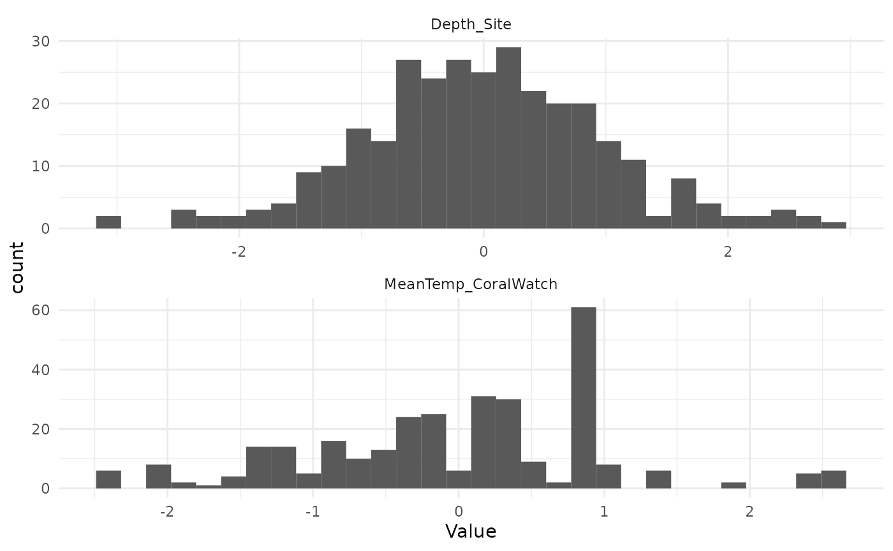
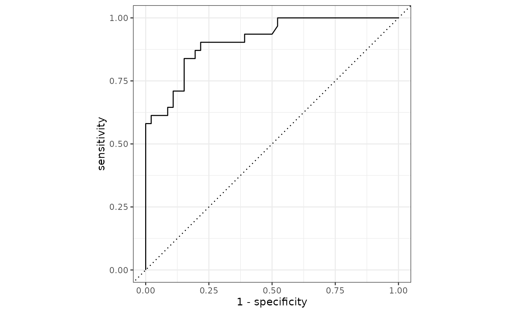
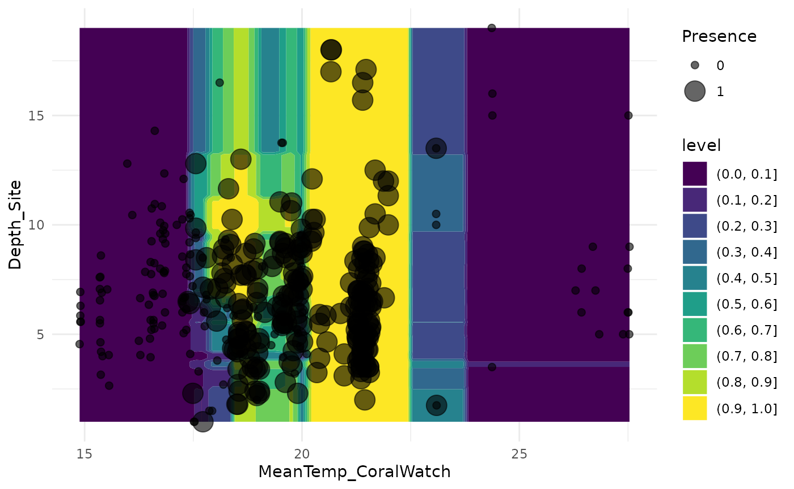

Forests of the Future Week 6 Lecture
week_6_lecture.RmdForests of the Future Week 6
Species Distribution Modelling 2
- Last week we learned how to use
tidymodelsto fit a model to data - We modelled the abundance of fish species at different reefs based on their mean temperatures
- Today we will talk about modelling occurrence data, where we have data on the presence or absence of species at particular sites
- We will also learn how to preprocess data using
tidymodels, with therecipespackage
Ecological Niche Theory
- All species have an ecological niche
- An Ecological niche is the position of a species within an ecosystem
- The conditions necessary for persistence of the species
- Its ecological role in the ecosystem
- Combining both more formally:
- A niche is: the part of ecological space (defined by all combinations of biotic and abiotic environmental conditions) where the species population can persist and thus utilize resources and impact its environment
Ecological Niche Theory
- Niches are often visualized or conceptualized as hump-shaped distributions along an environmental variable

.pdf%20-%20Work%20-.png)

Data Science Steps
- A Question
- Collect Data
- Munge / Clean Data
- Transform Data for Model
- Analyze Data using Model
- Tune Model
- Validate / Test Model
- Interpret Model
This week
- A Question
- Collect Data
- Munge / Clean Data
- Transform Data for Model
- Analyze Data using Model
- Tune Model
- Validate / Test Model
- Interpret Model
- Modelling fish abundance
data("RF_abund")
fish_dat <- RF_abund %>%
filter(SpeciesName == "Thalassoma pavo") %>%
mutate(Presence = as.factor(Presence))- What if we only had presence / absence data?
Presence / Absence Data
- We are not really modelling numeric data anymore
- Presence or Absence are categories
- We do a classification Model, and classify into the present or absent category
- Binary classification models typically output a ‘probability’, a number between 0 and 1
- Observed data is compared to output using the ‘binomial’ probability distribution
Presence / Absence Data
- R has a number of probability distribution built-in which we can use to explore
rbinom(100, 1, 0.5)## [1] 1 0 0 0 1 0 0 1 1 1 0 0 1 1 1 1 1 0 1 0 0 1 1 0 1 0 1 1 1 0 0 0 0 1 0 0 1
## [38] 1 0 1 0 0 0 1 1 1 1 1 1 0 0 1 1 0 0 0 1 0 0 1 0 0 0 0 0 1 1 1 0 0 1 1 0 1
## [75] 1 1 0 1 0 1 0 0 0 0 0 1 0 1 1 0 0 0 0 0 1 0 0 1 0 1
rbinom(100, 1, 0.75)## [1] 1 1 1 1 1 0 0 0 1 1 1 0 1 1 1 1 1 1 0 0 1 1 0 1 1 0 0 0 1 1 1 0 0 0 1 0 1
## [38] 0 1 1 1 1 1 0 1 1 0 1 0 1 0 1 1 1 0 1 0 1 1 1 1 1 1 1 1 1 1 1 1 1 1 0 1 1
## [75] 1 0 0 1 1 1 1 1 0 1 1 1 0 1 1 1 1 0 1 1 1 0 1 1 1 0
rbinom(100, 1, 0.25)## [1] 0 0 0 0 0 1 0 0 0 0 1 0 1 0 0 0 0 0 0 0 0 0 0 1 0 1 1 1 0 0 0 0 0 0 0 0 1
## [38] 1 0 0 0 0 0 0 1 1 1 0 1 0 1 1 0 0 0 0 0 1 0 0 0 1 0 0 1 0 0 1 0 0 0 0 1 0
## [75] 0 0 0 0 0 1 0 0 0 0 1 0 0 1 0 0 0 0 0 0 0 0 1 0 0 0
RF_abund includes presence/absence data column
fish_dat$Presence## [1] 1 1 1 1 1 1 0 1 1 1 0 1 1 1 1 1 0 1 1 1 1 1 1 1 1 1 1 1 1 0 1 1 0 1 1 1 0
## [38] 1 1 1 1 1 1 0 0 0 1 1 0 1 0 0 1 1 1 0 1 1 0 1 0 0 1 1 1 0 0 0 0 0 0 1 1 1
## [75] 1 1 1 1 0 0 0 1 1 1 1 1 0 1 1 0 0 1 0 1 1 1 1 1 1 1 1 1 1 1 1 1 1 1 1 1 1
## [112] 1 1 1 1 1 1 1 1 1 1 1 1 1 1 1 1 1 1 1 1 1 1 1 1 1 1 1 1 1 1 1 1 1 1 1 1 1
## [149] 1 1 1 1 1 1 1 1 1 1 1 1 1 1 1 1 1 1 1 1 1 1 1 1 1 1 1 1 1 1 1 1 1 1 1 1 1
## [186] 1 1 1 1 1 1 1 1 1 1 1 1 1 1 0 0 0 0 0 1 0 0 0 0 0 0 1 1 0 1 0 0 0 0 0 0 0
## [223] 0 0 1 1 1 0 0 0 1 0 1 1 0 0 1 1 0 0 0 1 0 1 1 1 0 1 1 1 1 1 0 0 0 0 0 0 0
## [260] 0 0 0 0 0 0 0 0 0 0 0 0 1 0 0 1 0 0 0 0 0 0 0 0 0 0 0 0 0 0 0 0 1 1 0 0 1
## [297] 1 0 0 0 0 1 1 1 1 1 1 1 1 1 1 1 1 1 1 1 1 1 0 0 1 0 1 1 1 1 0 0 0 0 0 0 0
## [334] 0 0 0 0 0 0 0 0 0 0 0 0 0 0 0 0 0 0 0 0 0 0 0 0 0 0 0 0 0 0 0 0 1 1 1 0 0
## [371] 0 1 0 0 1 1 1 1 1 0 1 0 0 0 1
## Levels: 0 1Let’s model fish occurrence
- Use two variables: Mean Temperature and Depth
- In order to make them more comparable we will ‘standardise’ them
- We will also test our model by creating a test set
- Split off a test set:
set.seed(1234)
data_split <- initial_split(fish_dat, 0.8, strata = Presence)
train_data <- training(data_split)
test_data <- testing(data_split)
train_data## # A tibble: 308 × 25
## SpeciesName SiteC…¹ Abund…² Sampl…³ MeanT…⁴ MinTe…⁵ MaxTe…⁶ SDTem…⁷ ECOre…⁸
## <chr> <chr> <dbl> <dbl> <dbl> <dbl> <dbl> <dbl> <fct>
## 1 Thalassoma p… AND2 0 164 17.6 14.1 22.8 2.85 Albora…
## 2 Thalassoma p… AND25 0 173 19.0 14.0 25.4 4.01 Albora…
## 3 Thalassoma p… AND37 0 173 19.1 14.0 26.1 4.20 Albora…
## 4 Thalassoma p… AND43 0 173 18.9 14.3 25.3 3.66 Albora…
## 5 Thalassoma p… AND50 0 164 18.2 14.2 23.5 3.02 Albora…
## 6 Thalassoma p… AND51 0 164 18.3 14.1 23.8 3.12 Albora…
## 7 Thalassoma p… AND54 0 173 18.6 14.2 24.6 3.41 Albora…
## 8 Thalassoma p… AND56 0 164 17.8 14.2 22.1 2.66 Albora…
## 9 Thalassoma p… AND60 0 164 18.4 14.9 22.2 2.53 Sahara…
## 10 Thalassoma p… AND63 0 173 18.9 14.4 26.3 3.85 Albora…
## # … with 298 more rows, 16 more variables: Presence <fct>, OLRE <fct>,
## # MaxAbundance <dbl>, N_Obs <int>, Confidence_NObs <dbl>, T_Range_Obs <dbl>,
## # Confidence_TRange_Obs <dbl>, N_Absences_T_Upper <int>,
## # N_Absences_T_Lower <int>, Confidence_Occ_Tupper <dbl>,
## # Confidence_Occ_Tlower <dbl>, T_Upper_Absences <dbl>,
## # T_Lower_Absences <dbl>, T_Mean_Absences <dbl>, NEOLI <dbl>,
## # Depth_Site <dbl>, and abbreviated variable names ¹SiteCode, …
test_data## # A tibble: 77 × 25
## SpeciesName SiteC…¹ Abund…² Sampl…³ MeanT…⁴ MinTe…⁵ MaxTe…⁶ SDTem…⁷ ECOre…⁸
## <chr> <chr> <dbl> <dbl> <dbl> <dbl> <dbl> <dbl> <fct>
## 1 Thalassoma p… AND1 3 217 17.5 14.1 22.6 2.75 Albora…
## 2 Thalassoma p… AND12 100 173 18.5 14.0 24.7 3.67 Albora…
## 3 Thalassoma p… AND16 0 173 18.8 14.0 25.2 3.89 Albora…
## 4 Thalassoma p… AND18 13 173 18.9 14.0 25.2 3.92 Albora…
## 5 Thalassoma p… AND19 1 173 19.0 14.0 25.5 4.08 Albora…
## 6 Thalassoma p… AND21 11 173 18.8 14.0 25.2 3.87 Albora…
## 7 Thalassoma p… AND27 14 173 19.0 14.0 25.5 4.08 Albora…
## 8 Thalassoma p… AND29 17 173 19.0 14.0 25.4 4.03 Albora…
## 9 Thalassoma p… AND3 8 164 17.7 14.1 22.9 2.90 Albora…
## 10 Thalassoma p… AND4 0 164 17.9 14.1 23.3 3.01 Albora…
## # … with 67 more rows, 16 more variables: Presence <fct>, OLRE <fct>,
## # MaxAbundance <dbl>, N_Obs <int>, Confidence_NObs <dbl>, T_Range_Obs <dbl>,
## # Confidence_TRange_Obs <dbl>, N_Absences_T_Upper <int>,
## # N_Absences_T_Lower <int>, Confidence_Occ_Tupper <dbl>,
## # Confidence_Occ_Tlower <dbl>, T_Upper_Absences <dbl>,
## # T_Lower_Absences <dbl>, T_Mean_Absences <dbl>, NEOLI <dbl>,
## # Depth_Site <dbl>, and abbreviated variable names ¹SiteCode, …Transform data
- Make symmetric and non-skewed (Yeo-Johnson transformation)
- Flexible transformation that needs a parameter, which is usually chosen based on an optimization with the training data
- Standardise (make mean zero, and standard deviation 1)
- Before:
s_dat <- train_data %>%
select(MeanTemp_CoralWatch, Depth_Site) %>%
pivot_longer(cols = everything(), values_to = "Value", names_to = "Variable")
ggplot(s_dat, aes(Value)) +
geom_histogram(bins = 30) +
facet_wrap(vars(Variable), nrow = 2, scales = "free") +
theme_minimal()
MeanTemp_yj <- car::powerTransform(train_data$MeanTemp_CoralWatch,
family = "yjPower")
Depth_yj <- car::powerTransform(train_data$Depth_Site,
family = "yjPower")
MeanTemp_yj## Estimated transformation parameter
## train_data$MeanTemp_CoralWatch
## -0.8426166
Depth_yj## Estimated transformation parameter
## train_data$Depth_Site
## 0.1361994
train_data <- train_data %>%
mutate(MeanTemp_tr = car::yjPower(MeanTemp_CoralWatch, MeanTemp_yj$roundlam),
Depth_tr = car::yjPower(Depth_Site, Depth_yj$roundlam))- After:
s_dat <- train_data %>%
select(MeanTemp_tr, Depth_tr) %>%
pivot_longer(cols = everything(), values_to = "Value", names_to = "Variable")
ggplot(s_dat, aes(Value)) +
geom_histogram(bins = 30) +
facet_wrap(vars(Variable), nrow = 2, scales = "free") +
theme_minimal()
What about the test data?
- When we use the model to predict the occurrence on the test set, the data must be transformed in exactly the same way as the training set
- This means we need to keep our lambda parameter fit on the training data and apply the same parameter to transform the test data
- The standardisation also requires parameters from the training data
- Keeping track of these transformations manually is dangerous
- A common mistake is to transform the test data using parameters derived from the test data, this makes the test data incomparable to the training data
Recipes helps to solve this issue
- A
recipeis a set of steps applied to data before modelling - Everything is kept track of by
tidymodelsso that the steps are applied correctly to test data after the model is fit - Let’s make a recipe
RF_recipe <- recipe(train_data,
Presence ~ MeanTemp_CoralWatch + Depth_Site)
RF_recipe## Recipe
##
## Inputs:
##
## role #variables
## outcome 1
## predictor 2Add Steps to the recipe
RF_recipe <- recipe(train_data,
Presence ~ MeanTemp_CoralWatch + Depth_Site) %>%
step_YeoJohnson(MeanTemp_CoralWatch, Depth_Site) %>%
step_normalize(MeanTemp_CoralWatch, Depth_Site)
RF_recipe## Recipe
##
## Inputs:
##
## role #variables
## outcome 1
## predictor 2
##
## Operations:
##
## Yeo-Johnson transformation on MeanTemp_CoralWatch, Depth_Site
## Centering and scaling for MeanTemp_CoralWatch, Depth_SitePrep the recipe
- Prepping a recipe estimates any required parameters
RF_recipe <- prep(RF_recipe)
RF_recipe## Recipe
##
## Inputs:
##
## role #variables
## outcome 1
## predictor 2
##
## Training data contained 308 data points and no missing data.
##
## Operations:
##
## Yeo-Johnson transformation on MeanTemp_CoralWatch, Depth_Site [trained]
## Centering and scaling for MeanTemp_CoralWatch, Depth_Site [trained]Bake the recipe
- Baking applies the steps to a dataset
train_data_tr <- bake(RF_recipe, train_data)
train_data_tr## # A tibble: 308 × 3
## MeanTemp_CoralWatch Depth_Site Presence
## <dbl> <dbl> <fct>
## 1 -0.761 -1.37 0
## 2 -0.125 -2.22 0
## 3 -0.0707 0.555 0
## 4 -0.150 -1.34 0
## 5 -0.480 -1.73 0
## 6 -0.448 -0.645 0
## 7 -0.300 -0.946 0
## 8 -0.672 0.144 0
## 9 -0.369 -0.196 0
## 10 -0.159 -0.0482 0
## # … with 298 more rowsThe data now looks like:
s_dat <- train_data_tr %>% select(MeanTemp_CoralWatch, Depth_Site) %>% pivot_longer(cols = everything(), values_to = "Value", names_to = "Variable")
ggplot(s_dat, aes(Value)) + geom_histogram(bins = 30) + facet_wrap(vars(Variable), nrow = 2, scales = "free") + theme_minimal()
Bake the test data
- We can now easily apply the exact same data manipulation to the test data
test_data_tr <- bake(RF_recipe, test_data)
test_data_tr## # A tibble: 77 × 3
## MeanTemp_CoralWatch Depth_Site Presence
## <dbl> <dbl> <fct>
## 1 -0.828 -2.00 1
## 2 -0.315 0.00543 1
## 3 -0.177 -0.412 0
## 4 -0.171 0.495 1
## 5 -0.0972 -2.00 1
## 6 -0.185 -0.667 1
## 7 -0.0980 -1.93 1
## 8 -0.119 0.178 1
## 9 -0.710 -3.14 1
## 10 -0.637 -2.64 0
## # … with 67 more rowsCombine a recipe and a model
RF_mod <-
boost_tree() %>%
set_engine('xgboost') %>%
set_mode('classification')
RF_mod## Boosted Tree Model Specification (classification)
##
## Computational engine: xgboostA workflow is a recipe and a
model
## ══ Workflow ════════════════════════════════════════════════════════════════════
## Preprocessor: Recipe
## Model: boost_tree()
##
## ── Preprocessor ────────────────────────────────────────────────────────────────
## 2 Recipe Steps
##
## • step_YeoJohnson()
## • step_normalize()
##
## ── Model ───────────────────────────────────────────────────────────────────────
## Boosted Tree Model Specification (classification)
##
## Computational engine: xgboostUse fit to run a workflow
## ══ Workflow [trained] ══════════════════════════════════════════════════════════
## Preprocessor: Recipe
## Model: boost_tree()
##
## ── Preprocessor ────────────────────────────────────────────────────────────────
## 2 Recipe Steps
##
## • step_YeoJohnson()
## • step_normalize()
##
## ── Model ───────────────────────────────────────────────────────────────────────
## ##### xgb.Booster
## raw: 25.1 Kb
## call:
## xgboost::xgb.train(params = list(eta = 0.3, max_depth = 6, gamma = 0,
## colsample_bytree = 1, colsample_bynode = 1, min_child_weight = 1,
## subsample = 1), data = x$data, nrounds = 15, watchlist = x$watchlist,
## verbose = 0, nthread = 1, objective = "binary:logistic")
## params (as set within xgb.train):
## eta = "0.3", max_depth = "6", gamma = "0", colsample_bytree = "1", colsample_bynode = "1", min_child_weight = "1", subsample = "1", nthread = "1", objective = "binary:logistic", validate_parameters = "TRUE"
## xgb.attributes:
## niter
## callbacks:
## cb.evaluation.log()
## # of features: 2
## niter: 15
## nfeatures : 2
## evaluation_log:
## iter training_logloss
## 1 0.5244973
## 2 0.4279284
## ---
## 14 0.1878803
## 15 0.1829834Make predictions
- Predict the test data
- The workflow knows to apply the recipe to the test data first
predict(RF_fit, test_data)## # A tibble: 77 × 1
## .pred_class
## <fct>
## 1 0
## 2 1
## 3 1
## 4 1
## 5 1
## 6 1
## 7 1
## 8 1
## 9 0
## 10 0
## # … with 67 more rows
predict(RF_fit, test_data, type = "prob")## # A tibble: 77 × 2
## .pred_0 .pred_1
## <dbl> <dbl>
## 1 0.916 0.0842
## 2 0.110 0.890
## 3 0.118 0.882
## 4 0.0654 0.935
## 5 0.224 0.776
## 6 0.0807 0.919
## 7 0.224 0.776
## 8 0.136 0.864
## 9 0.879 0.121
## 10 0.767 0.233
## # … with 67 more rowsAugment data with predictions
RF_test_preds <- augment(RF_fit, test_data)At last we test the fit based on test data

RF_test_preds %>%
roc_auc(.pred_0, truth = Presence)## # A tibble: 1 × 3
## .metric .estimator .estimate
## <chr> <chr> <dbl>
## 1 roc_auc binary 0.911Plot predictions and original data
pred_dat <- cross_df(list(MeanTemp_CoralWatch = seq(min(fish_dat$MeanTemp_CoralWatch),
max(fish_dat$MeanTemp_CoralWatch),
length.out = 100),
Depth_Site = seq(min(fish_dat$Depth_Site),
max(fish_dat$Depth_Site),
length.out = 100)))
newdat <- augment(RF_fit, pred_dat)
ggplot(newdat, aes(MeanTemp_CoralWatch, Depth_Site)) +
geom_contour_filled(aes(z = .pred_1)) +
geom_point(aes(size = Presence), data = fish_dat, alpha = 0.6) +
theme_minimal()## Warning: Using size for a discrete variable is not advised.
Pine Rocklands Plant Species
data("IRC")
IRC## # A tibble: 476,255 × 7
## ScientificName area_name Occur…¹ Intro…² size long lat
## <chr> <chr> <chr> <chr> <chr> <dbl> <dbl>
## 1 Abelmoschus esculentus A.D. Doug Barnes Pa… Absent Not in… 60.4… -80.3 25.7
## 2 Abelmoschus esculentus Alice C. Wainwright… Absent Not in… 21.5… -80.2 25.7
## 3 Abelmoschus esculentus Allapattah Flats Wi… Absent Not in… 2094… -80.5 27.2
## 4 Abelmoschus esculentus Amberjack Slough Absent Not in… 182 … -82.3 26.9
## 5 Abelmoschus esculentus Arch Creek Park Absent Not in… 10.3… -80.2 25.9
## 6 Abelmoschus esculentus Arthur R. Marshall … Absent Not in… 1484… -80.2 26.5
## 7 Abelmoschus esculentus Bahia Honda State P… Absent Not in… 491.… -81.3 24.7
## 8 Abelmoschus esculentus Bartlett Estate Absent Not in… 35 a… -80.1 26.1
## 9 Abelmoschus esculentus Beachwalk Pasley Pa… Absent Not in… 17 a… -80.2 27.2
## 10 Abelmoschus esculentus Big and Little Geor… Absent Not in… 18.2… -80.4 25.6
## # … with 476,245 more rows, and abbreviated variable names ¹Occurrence,
## # ²Introduced